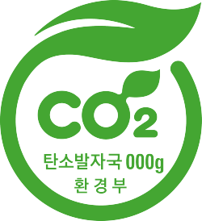

초록초록(here 혹은 로고 클릭)
아름다운 녹색 소비

탄소성적표시
제품의 생산부터 폐기 과정까지 발생하는 온실가스의 배출량을 제품에 표기하고, 저탄소 배출 상품을 홍보하기 위해 시행한 제도
탄소성적표시란?
탄소성적표지 제도는 제품의 온실가스를 측정하는 1단계 탄소배출량 인증, 온실가스를 줄이도록 하는 2단계 저탄소제품 인증, 마지막으로 발생한 온실가스를 상쇄시켜 0으로 만드는 3단계 탄소중립제품 인증의 3단계로 이어짐 상품의 생산에서 사용 및 폐기까지 생애(Life cycle) 전 과정에서 배출되는 온실가스량을 산정하고 평가해 이를 인증하고 그 결과를 상품에 표시하여 소비자가 구매할 때 참고할 수 있도록 정보를 제공 